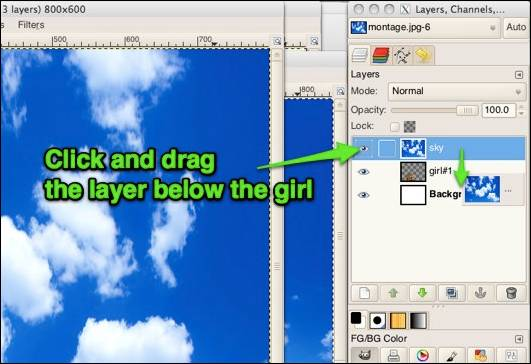
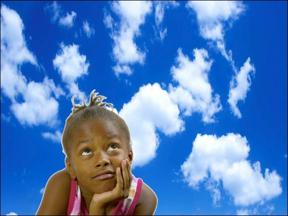

Add the Sky Image to the Montage
Use the same process to add the image of the sky to the montage.
Select the sky photograph using the Window menu item.
You will want the entire image and won't have to do use any selection tools. Select the entire image (CTRL A) and do a copy (Edit/Copy) to save the image in the clipboard.
- Switch back to the montage image using Window from the menu bar.
- Create a new layer named "sky" (Make sure you are looking at the layers for the montage image by using the drop down at the top of the Layer window!)
- Select the "sky" layer.
- Paste in the image (Edit/Paste). It will cover the image of the girl, but we will fix that in step #7
- Resize the sky to fill the screen (Shift T). Hit Enter when finished.
- Anchor the new layer by clicking on the anchor at the bottom of the layer dialog box.
- Rearrange the layers by clicking and dragging the "sky" layer underneath the "girl" layer.

Here's what the image should now look like:

Note: If a more sophisticated selection technique had been used the white border would not be around the edge of the girl.
Don't forget to do a File/Save to save your work.